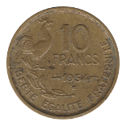

Ten Francs
Turin (1945-1949)
1945 Long Leaves

1946 Short Leaves
1946-B Short Leaves
1947 Large Head
1947-B Large Head
1948
1948-B
1949
1949-B
Guiraud (1950-1958)
1950
1950-B
1951
1951-B
1952
1952-B
1953
1953-B
1954
 1954-B
1955

1957
1958
Back to Fourth French Republic
Back to France Main Page
Back to Home